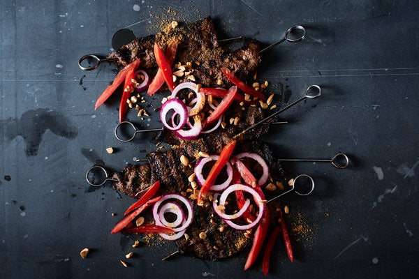

Beef Suya Recipe

Popular Nigerian street food
Suya is a popular Nigerian street food made of thin strips of meat that are seasoned, skewered and grilled. The term “suya” can refer to the preparation technique or the resulting dish, and can apply to other meats, such as goat and chicken.
This recipe is similar in style to the suya made from a fattier cut of beef called tozo, which comes from the hump of the zebu cattle, found in northern Nigeria. A well-marbled piece of boneless short rib is a great substitute.
Ask your butcher to thinly slice the meat into strips, or pop it into your freezer for 30 minutes and use a sharp knife to slice. Suya spice, or yaji, is available online or at African groceries, or you can make your own.
Ingredients:
- 1½ pounds boneless short ribs, sliced lengthwise into ¼-inch-thick strips
- ¼ cup peanut oil, plus more for grilling
- 2 tablespoons store-bought or homemade ground suya spice blend
- 1 (2-inch) piece fresh ginger, grated
- 2 garlic cloves, grated
- Kosher salt
- 2 medium plum tomatoes, sliced into ¼-inch strips, seeds discarded
- 1 small red onion, peeled and thinly sliced into rings
- 1 lime (optional)
- ¼ cup toasted peanuts, chopped
How to make Beef Suya
- Lay several strips of meat on a piece of plastic wrap, leaving about ½ inch between each slice, and top with another piece of plastic wrap.
Pound the meat strips with a rolling pin or the bottom of a heavy frying pan until ⅛-inch thick. Repeat this process until all the meat has been flattened. Set aside.
- In a medium bowl, combine ¼ cup peanut oil and 2 tablespoons suya spice blend with ginger and garlic.
Add beef, toss to coat and season with 2 teaspoons salt. Cover with plastic wrap, and let marinate in the fridge for 4 to 12 hours.
- Heat a gas grill or grill pan over medium-high, and brush with peanut oil.
- Skewer the beef pieces on 12 individual presoaked wooden or metal skewers, wiping off any excess marinade.
Brush the meat generously with more peanut oil and set the skewers on a baking sheet.
- Working in batches if necessary, grill the beef skewers until meat is cooked through and lightly charred on both sides, 3 to 4 minutes per side.
Transfer the skewers to a platter and sprinkle with more suya spice blend. Repeat until all the beef has been grilled.
- Place the tomato and onion slices in a bowl and squeeze lime juice all over. Season with salt and allow to sit for 10 minutes. Strain any excess liquid.
- Top skewers with red onion and tomatoes, sprinkle with toasted peanuts, and serve with additional suya spice, for dipping.